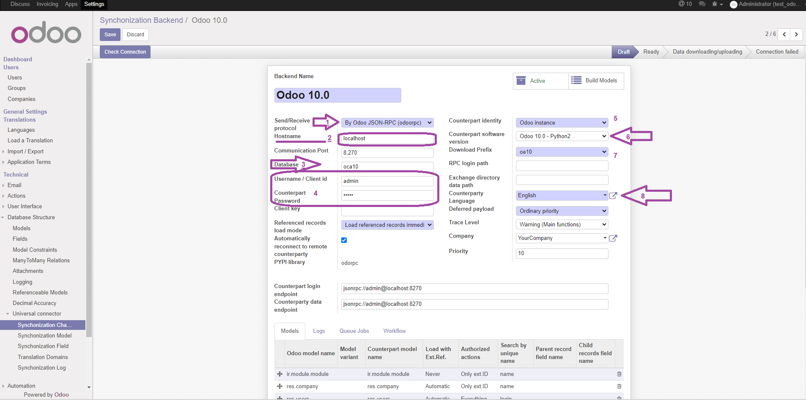

Add protocol jsonrpc (Odoo 10+) to Universal Connector

Aggiunge protocollo jsonrpc (Odoo 10+) a connettore universale






This module enable the importing from remote Odoo instance using jsonrpc. This protocol, called JSON-RPC, is like XML-RPC but use JSON representation rather than XML and it is designed just for Odoo remote identities. It is implemented by odoorpc, so the PYPI odoorpc package has to be installed before install this module.
Use this protocol to connect another Odoo (From 10.0+).

Questo modulo abilita l'importazione da un'istanza remota di Odoo usando jsonrpc. Questo protocollo è una variante di XML-RPC over http/https ed è progettato specificatamente per istanze remote di Odoo. Viene fornito dal modulo universal_connector_by_xmlrpc attraverso oerplib, quindi il package python PYPI oerplib3 deve essere installato.
Usare questo protocollo per connettere un altro Odoo (Da 10.0+).


Settings » Activate the developer mode
Settings » Technical » Synchronization Backend
If Odoo can connect with remote counterparty, backend state is set to "Ready".

Configurazione » Attivare la modalità sviluppatore
Configurazione » Funzioni tecniche » Dorsale di sincronizzazione
Se Odoo riesce a connettersi con controparte, lo stato della dorsale diventa "Pronto".
Authors | Autori:
Contributors | Partecipanti:
This module is maintained by the SHS_AV s.r.l..
This module is part of connector project.
Published information on | Informazioni pubblicate: 2025-05-10